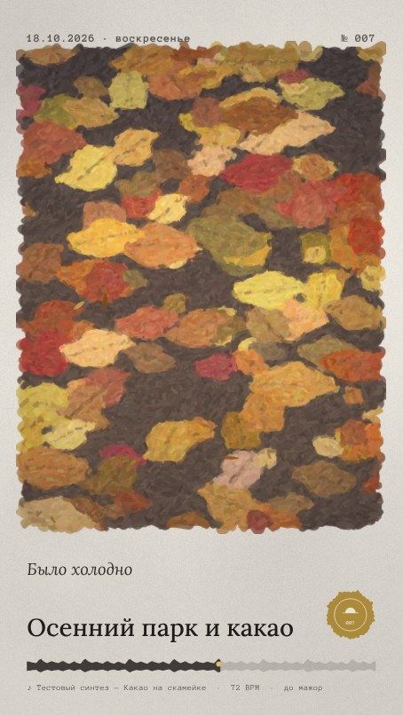
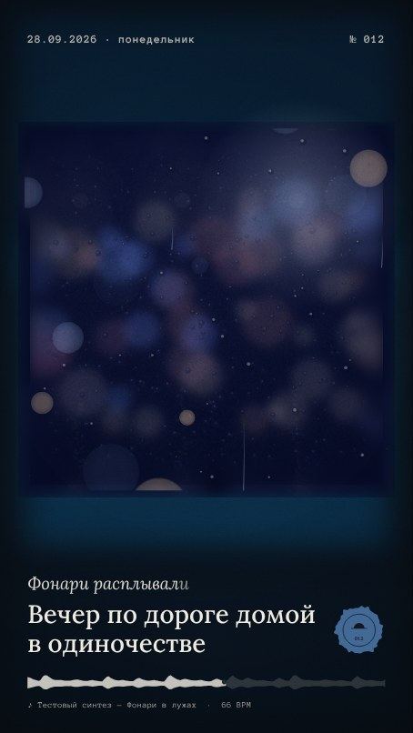
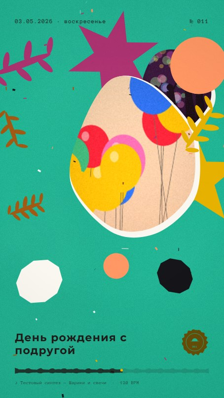
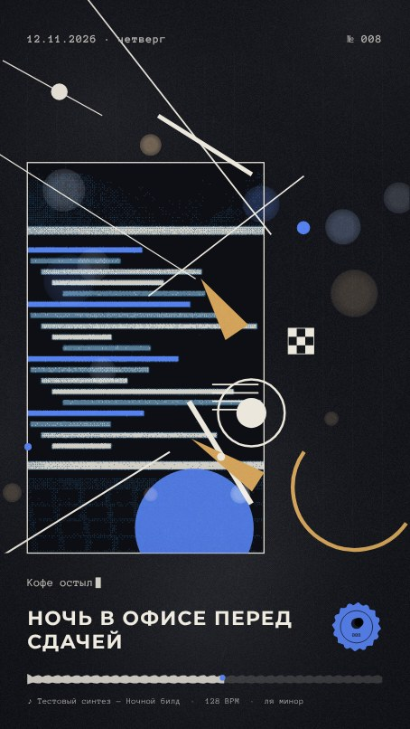
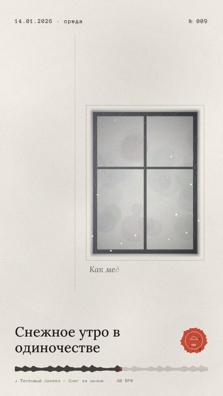
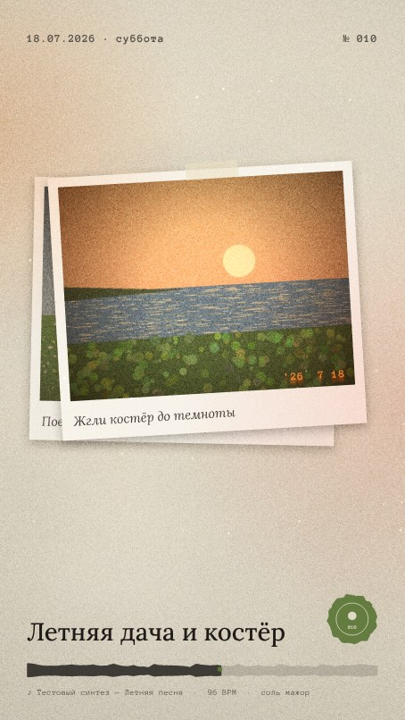
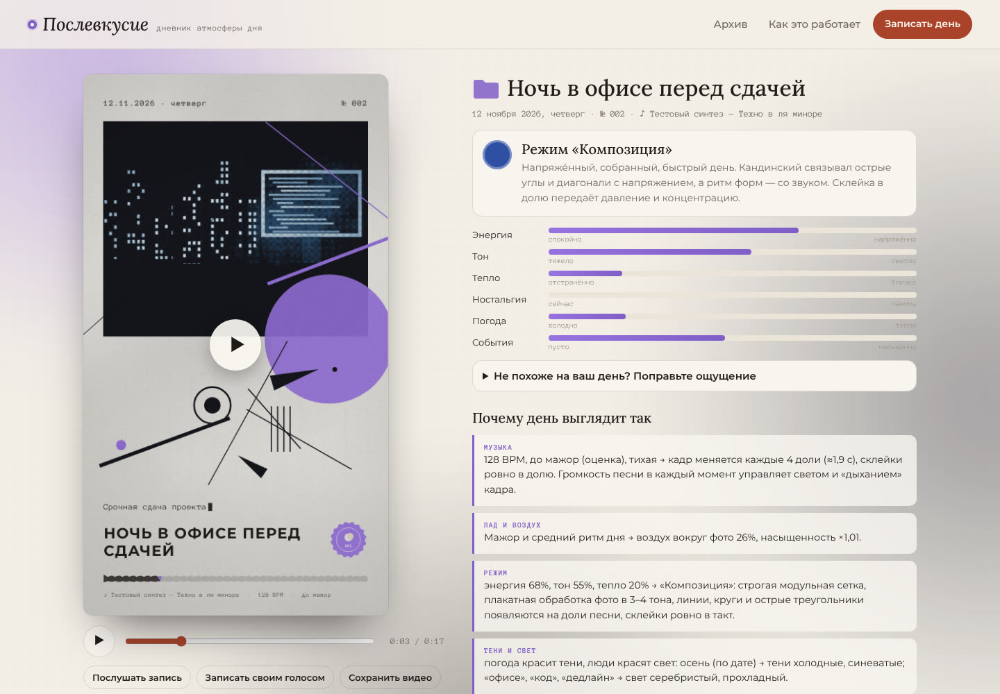
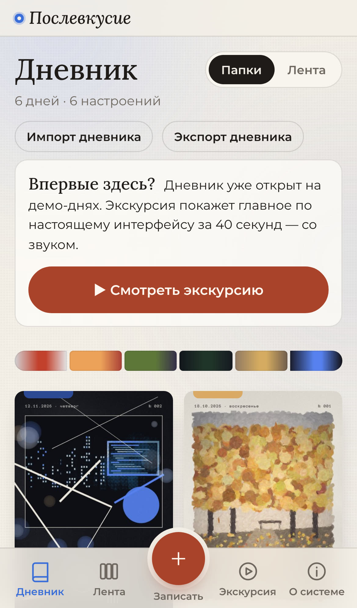
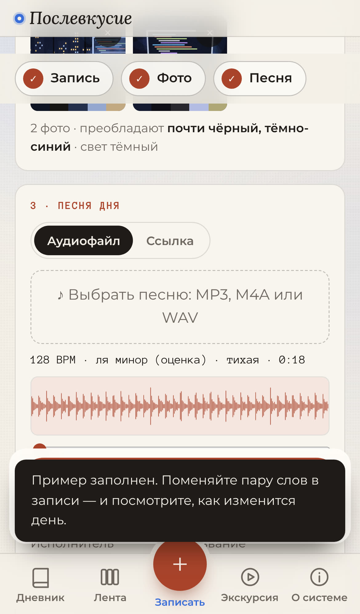
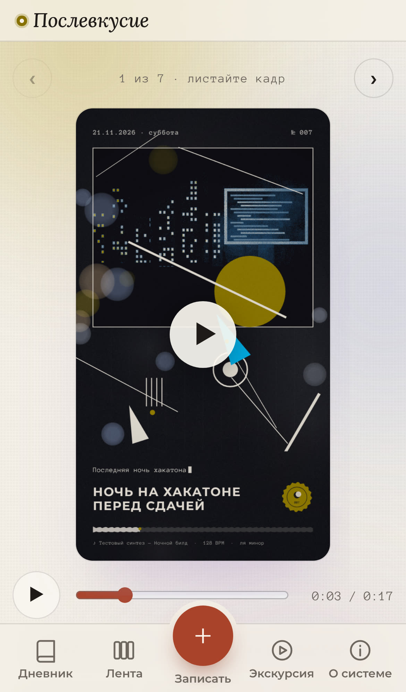

Дневник, который сохраняет не то, как выглядел день, а то, как он ощущался.



Через год в галерее — парк, кружка, лица. Но холод, какао из термоса, та самая песня и тепло рядом — исчезли. Ощущение дня невидимо, и его нечем сохранить.
«Гуляли по парку, всё в жёлтых листьях. Было холодно, но мы пили какао…»
MP3 из телефона или ссылка на любой сервис.
Видео под фрагмент вашей песни в папке «Осенний парк и какао» — с объяснением каждого решения.
Энергия · Тон · Тепло близости · Погода · Плотность событий · Ностальгия → режим + дозировка



Постоянно для всех: формат 9:16, поля, дата и номер страницы, название, «печать дня» из громкости песни и «дорожка дня».
«Было холодно, но мы пили какао» → холодные синеватые тени и тёплый персиковый свет.
Темп песни задаёт длину кадра, громкость — «дыхание» света. Каждое решение — в блоке «Почему день выглядит так». Не похоже? Сдвиньте ось — страница пересоберётся по тем же правилам.
И сам интерфейс окрашивается в цвета дня — и хранит их «послевкусие» в архиве.




Нижняя панель с «＋», шаги «Запись · Фото · Песня», свайп листает дни как сторис.
▶ Экскурсия — 40 секунд по живому интерфейсу со звуком.
✦ Попробовать на примере — если под рукой нет фото и MP3.
БПФ, функция атак по полосам, темп и доли, лад по профилям Крумхансла с учётом баса, срез MP3 без перекодирования.
Canvas 2D: мазки по полю направлений, плакатный растр, вырезки, плёнка, мокрое стекло. Видео 1080×1920 через MediaRecorder.
Данные не покидают устройство: IndexedDB, из песни хранится только фрагмент. Папка дня — ZIP.
Один файл index.html · тесты с проверками и GitHub Actions · сквозной сценарий в Chrome (Playwright) · ИИ (Claude) — помощь в проектировании, коде и текстах.
Честно: лад — оценка, при сомнении мы так и пишем · песню по ссылке браузер не даёт анализировать — характер берётся из описания · видео пишется в реальном времени · настроение — подбор оформления, а не психологическая диагностика.